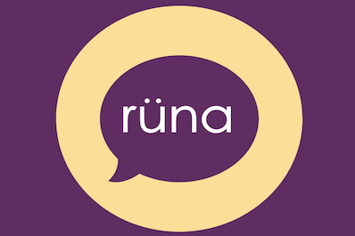

Runa
HackATL - Fall 2017

Inspiration
We made this to help track child speech development and detectany abnormalities.
What it does
Runa would record a child's voice and log new vocbulary and sentence length.
How I built it
It is only a POC, it listens to a voice source and uses Google's speech to text API to track
vocbulary and sentance length. It then displays visualization depicting speech progress.